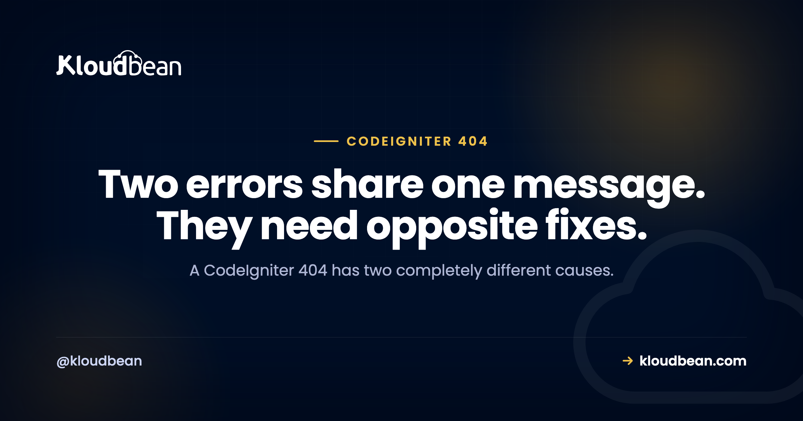

CodeIgniter 404 Page Not Found: Work Out Whose 404 It Is First

A CodeIgniter 404 is two unrelated problems wearing the same number, and nearly all the wasted time on this comes from fixing the wrong one. Either CodeIgniter ran, looked for something to handle your URL, and found nothing, which is a routing problem inside your application. Or the web server never handed the request to CodeIgniter at all, which is a rewrite or document root problem and has nothing to do with your controllers. The page itself tells you which, and once you know, the fix is usually one line. Look at what the 404 page looks like before you change anything.
Check whether the 404 came from CodeIgniter or from your web server. If it is CodeIgniter's own styled "404 Page Not Found" page, the framework is running and no route matched, so look at app/Config/Routes.php, controller file naming, and whether auto-routing is enabled, since CodeIgniter 4 disables it by default. If it is a plain nginx or Apache 404, CodeIgniter never executed, so fix your rewrite rules and make sure the document root points at the public directory.
First question: whose 404 is this?
One look at the page splits the problem in half.
| What you see | Who produced it | What it means |
|---|---|---|
| Styled CodeIgniter page, "404 Page Not Found" | CodeIgniter | PHP ran, no route matched |
| Plain "404 Not Found" with nginx or Apache in the footer | Web server | CodeIgniter never ran |
| Blank page or a 500 | PHP | Different problem, read the error log |
You can confirm it from the command line rather than trusting the styling, which is worth doing because a custom error view can disguise either one.
# Does the request reach PHP at all?
curl -sI https://example.com/some/route | head -3
# The decisive test: does it work when you name index.php explicitly?
curl -sI https://example.com/index.php/some/route | head -3That second command is the one that settles it. If /index.php/some/route works while /some/route does not, your routes and controllers are fine and your rewrite rules are not. That is the single most useful test on this page, and it also tells you the fix is entirely in server configuration.
The other confirmation is your logs. A request that reaches CodeIgniter appears in writable/logs/. One that does not appears only in the web server's access log. An empty framework log with traffic arriving means the request never got that far.
The server's 404: index.php is not in the path
CodeIgniter uses a front controller. Every request is supposed to be handed to index.php, which then works out what to do. Pretty URLs exist because the server quietly rewrites /products/view/12 into that single entry point. Remove the rewrite and the server goes looking for a directory called products, does not find one, and returns its own 404.
On nginx, the rewrite is a try_files directive: serve the file if it exists, serve the directory if it exists, otherwise hand it to the front controller.
server {
listen 443 ssl;
server_name example.com;
# CodeIgniter 4: docroot is the public directory
root /var/www/example.com/public;
index index.php;
location / {
try_files $uri $uri/ /index.php$is_args$args;
}
location ~ \.php$ {
include fastcgi_params;
fastcgi_pass unix:/run/php/php8.2-fpm.sock;
fastcgi_param SCRIPT_FILENAME $document_root$fastcgi_script_name;
}
}On Apache, CodeIgniter ships an .htaccess that does the same job with mod_rewrite. Two things have to be true for it to work, and people usually check only the first: mod_rewrite must be enabled, and Apache must be configured to read .htaccess at all. If AllowOverride is set to None, your rewrite file is present, correct, and completely ignored.
# The rule itself: anything that is not a real file or directory goes to the front controller
RewriteEngine On
RewriteCond %{REQUEST_FILENAME} !-f
RewriteCond %{REQUEST_FILENAME} !-d
RewriteRule ^(.*)$ index.php/$1 [L]# And in the vhost, or .htaccess is never read
<Directory /var/www/example.com/public>
AllowOverride All
</Directory>The silent-failure shape here is worth naming, because it wastes a lot of time: with AllowOverride None nothing warns you. No error, no log line, no complaint. The file is simply not consulted, so every fix you make to it changes nothing, and it is very easy to conclude the rules are wrong when they were never read.
This is the half of the problem that depends on who owns the web server. On a managed PHP server, Kloudbean's included, the stack comes with the front-controller rewrite already in place, so a fresh application answers pretty URLs without you writing a vhost. On a raw VPS this block is yours to write and yours to keep correct through every nginx upgrade.
The CodeIgniter 4 mistake that is also a security problem
CodeIgniter 4 changed the layout: index.php lives in public/, and that directory is meant to be your document root. Everything else, your application code, configuration, and writable directory, is supposed to sit above the web root where no request can reach it.
Point the document root at the project root instead and two things happen. Routing misbehaves, because the entry point is now one level down. And considerably worse, your entire application becomes web-accessible, including .env with your database credentials, app/ with your source, and writable/ with your logs and sessions.
So if your CodeIgniter 4 project is serving from its root directory, treat it as urgent rather than as a routing bug. Test it directly:
# This must NOT return 200. If it does, your credentials are public.
curl -sI https://example.com/.env | head -1
# Nor should any of these be readable
curl -sI https://example.com/app/Config/Database.php | head -1
curl -sI https://example.com/writable/logs/ | head -1Fix the document root to end in /public. Working around the layout by adding rewrite rules at the project root is a common suggestion and it is the wrong move, because it leaves the application directory reachable and you are then relying on rules to hide files that should never have been exposed. If you have been running that way, rotate the database credentials in .env, since you cannot know whether anyone fetched them.
Rotation is the part worth doing properly. If the database is a managed Kloudbean one, change the credentials there and update the app, and while you are in that screen use IP allow-listing so only your application server's address can connect at all. A leaked password matters a great deal less when the only host permitted to use it is yours.
Auto-routing is off by default in CodeIgniter 4
This one catches people who came from CodeIgniter 3, and people upgrading an existing CodeIgniter 4 project. In CodeIgniter 3, a controller at Products.php with a view() method was reachable at /products/view automatically. No route needed.
CodeIgniter 4 turns auto-routing off by default, so a controller with no explicit route returns 404 even though the class exists and is perfectly correct. The reasoning is sound: automatically exposing every public method of every controller makes it easy to publish endpoints you never intended, and to bypass filters and CSRF protection.
The recommended fix is to declare your routes, which is a little more typing and considerably more predictable.
// app/Config/Routes.php
$routes->get('/', 'Home::index');
$routes->get('products', 'Products::index');
$routes->get('products/view/(:num)', 'Products::view/$1');
$routes->post('products/save', 'Products::save');If you would rather enable auto-routing, note the HTTP verb detail that produces a very confusing bug: with the improved auto-router, the method name is expected to carry the verb, so a POST to products/save looks for postSave() rather than save(). That is why a form submission 404s while the same URL loads fine in a browser. A GET works, a POST does not, and nothing about the message hints at why.
My own preference is explicit routes. Your routes file becomes the list of everything your application exposes, which is useful when reviewing what is reachable, and you never have to reason about verb-to-method mapping.
Controller naming: works on your laptop, 404s on the server
A genuinely nasty one, because it is invisible in development.
CodeIgniter requires controller class names to be capitalised, and the file name must match the class name. So Products.php containing class Products. Name the file products.php and it will load happily on macOS or Windows, where the filesystem ignores case, and 404 on your Linux server, where it does not.
The signature is unmistakable once you know it: works locally, 404s in production, no error in any log, and the file is clearly there when you go and look.
# Check what the filenames actually are on the server
ls -l app/Controllers/
# Rename via git so the change is recorded properly
git mv app/Controllers/products.php app/Controllers/Products.phpUse git mv rather than renaming in your editor. On a case-insensitive filesystem, Git may not notice a rename that only changes case, so the fix appears to work for you and never reaches the server. Same class of problem as the one in our Cannot find module guide, which is the Node.js version of exactly this trap.
Two smaller naming rules in the same family. Methods must be public, since a private or protected method is not routable and yields a 404 rather than an error. And a method name colliding with something reserved will not route either.
Route definitions that quietly do not match
If CodeIgniter is running, auto-routing is settled, and naming is right, the remaining causes are in the routes file itself.
- Verb mismatch.
$routes->get()only answers GET. A form posting to that URL gets a 404, not a 405, which sends people looking in the wrong direction entirely. - Placeholder mismatch.
(:num)matches digits only, so/products/view/blue-widgetmisses a route expecting a number. Use(:segment)or(:any)where the value is not numeric. - Order. Routes are evaluated in order, so a broad pattern placed above a specific one swallows it. Specific first.
- Missing argument passing. Writing
'Products::view'where you meant'Products::view/$1'loses the captured segment, so the method runs with no argument and often 404s from inside. - A wrong
baseURL. Set inapp/Config/App.phpor your.env, this affects generated links, so the pages themselves are fine and every link on them points somewhere that does not exist.
# See every route CodeIgniter has actually registered
php spark routesRun that before editing anything. It prints the real routing table, which is faster than reading the config and inferring, and it immediately exposes the verb and placeholder mistakes above.
If you are on CodeIgniter 3
Still very widely deployed, and it has its own two settings that cause exactly this.
// application/config/config.php
// Must be empty when rewrite rules are working, otherwise
// CodeIgniter generates URLs containing index.php
$config['index_page'] = '';
// If routing breaks after a server move, try this explicitly
$config['uri_protocol'] = 'REQUEST_URI';The index_page one produces a confusing half-broken state: the site works, and every generated link has index.php in it, or the links are clean and the routes are not found. Whichever way round, it is this setting disagreeing with your rewrite rules.
uri_protocol is the setting to reach for when a site that worked on one server 404s on another with no code change, because it controls how CodeIgniter reads the requested path from the server environment, and that differs between server configurations.
A diagnosis order
- Look at the 404 page. Framework or server. This decides everything that follows.
- Try
/index.php/your/route. Works? Your rewrite rules are the problem, not your code. - Confirm the document root ends in
/publicon CodeIgniter 4, and check.envis not fetchable. - Run
php spark routes. Is the route registered, with the verb you are using? - Check auto-routing in
app/Config/Routes.phpif you are relying on it. - Check filename case against class names in
app/Controllers/. - Read
writable/logs/. Empty during traffic means requests are not reaching the framework.
Which of these is your code, and which is your server?
Useful to separate, because it tells you who can actually fix each one and stops you filing a support ticket about a routes file.
| The 404 you have | Who owns the fix |
|---|---|
| Route not defined, or defined with the wrong verb | Your code. Nobody else can guess your route table. |
| Auto-routing expected but disabled | Your code, in app/Config/Routes.php. |
| Controller filename case does not match the class | Your code, and it only appears on Linux. |
uri_protocol or index_page misconfigured (CI3) | Your config, though the server environment provoked it. |
Front-controller rewrite missing or AllowOverride None | The server. Managed on a managed platform, yours on a raw VPS. |
Document root not pointing at public/ | The server, and it is a security incident until fixed. |
| PHP-FPM socket path wrong after a PHP upgrade | The server, and it is the classic reason a working site 404s or 502s after patching. |
The bottom three are the reason people end up on a managed PHP host. Kloudbean's PHP servers run across seven clouds with the web server and PHP-FPM configured and patched, free SSL issued and renewed, automatic backups, Shorewall and Fail2ban on by default, and seven managed database engines (MySQL, MariaDB, PostgreSQL, Redis, Memcached, Elasticsearch, MongoDB) sitting beside the application. Cron jobs are set from the UI without SSH, which most CodeIgniter projects need eventually.
One honest gap, since this article is largely about a rewrite change breaking an entire site: one-click staging covers WordPress and Laravel, so on CodeIgniter you would roll your own staging copy. And the top four rows in that table stay yours on any platform on earth. No host reads your routes file, renames your controller, or knows which verb your form posts with. Managed hosting removes the server-shaped 404s. It has no opinion about your code.

Working past codeIgniter 404 Page Not Found
For the same case-sensitivity trap in Node, Cannot find module. When the status is not a 404, 403 Forbidden and 405 Method Not Allowed, which is what a verb mismatch should ideally return. For the server layer, nginx configuration and 502 Bad Gateway. On configuration and secrets, environment variables done right. And on shipping changes safely, zero downtime deployments.
Fewer mysteries on the next deploy.
Build logs stream live in the console, deployment history keeps what happened, and the logs viewer separates app errors from web requests, so a failed start is a five-minute read rather than a guessing game.
- ✓ Live build logs
- ✓ Deployment history
- ✓ Logs viewer
- ✓ Managed process restarts
- ✓ Automatic backups
- ✓ Git deploy
Plans from $8/mo · Free migration assistance · Free trial
FAQ
Why is CodeIgniter showing 404 Page Not Found?
Either the framework ran and no route matched, or the web server never passed the request to CodeIgniter. Tell them apart by the page: CodeIgniter's own styled 404 means routing, while a plain nginx or Apache 404 means the request never reached PHP. The quickest confirmation is to request /index.php/your/route, because if that works your rewrite rules are the problem.
Why do my CodeIgniter URLs only work with index.php in them?
Your rewrite rules are not active. CodeIgniter uses a single front controller and relies on the server rewriting pretty URLs to index.php. On nginx that is a try_files $uri $uri/ /index.php$is_args$args; directive. On Apache you need mod_rewrite enabled and AllowOverride All, because with AllowOverride None your .htaccess is ignored silently.
What should the document root be for CodeIgniter 4?
The public directory, not the project root. That is where index.php lives, and it keeps your application code, .env, and writable directory outside the web root. If your document root is the project root, check whether https://yoursite.com/.env returns 200, and if it does, fix the root and rotate your database credentials.
Why does my controller 404 even though the file exists?
Three usual reasons. Auto-routing is disabled by default in CodeIgniter 4, so a controller without an explicit route returns 404. The file name may not match the capitalised class name, which only breaks on case-sensitive Linux filesystems. Or the method is not public. Run php spark routes to see what is actually registered.
Why does a form submission 404 when the page loads fine?
A verb mismatch. A route declared with $routes->get() answers GET only, so a POST to the same URL finds no route. If you are using improved auto-routing, the method name is expected to include the verb, so a POST looks for postSave() rather than save(). Add an explicit $routes->post() entry.
Why does it work on my computer but 404 on the server?
Almost always filename case. macOS and Windows treat products.php and Products.php as the same file, Linux does not, so a mismatched controller filename works in development and 404s in production with nothing in the logs. Rename with git mv, since Git may not record a case-only rename made in your editor.
How do I see all my CodeIgniter routes?
Run php spark routes in the project root. It prints the routing table CodeIgniter actually built, including methods and handlers, which is far more reliable than reading the config file and inferring. It usually reveals verb mismatches and placeholder problems immediately.
What is uri_protocol in CodeIgniter 3?
It controls how CodeIgniter reads the requested path from the server environment. It is the setting to try when an application that worked on one server starts returning 404 on another with no code change, since server configurations differ in which variables they populate. Setting it explicitly to REQUEST_URI resolves most of these cases.
Does a 404 mean my .htaccess is wrong?
Not necessarily, and this is worth checking before you rewrite it. If Apache is configured with AllowOverride None for that directory, the file is never read at all, so a perfectly correct .htaccess produces exactly the same 404 as a broken one. There is no warning, so confirm AllowOverride All in the vhost first.